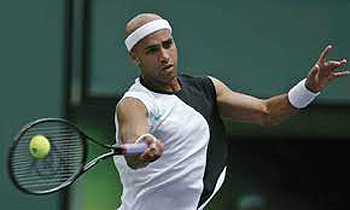
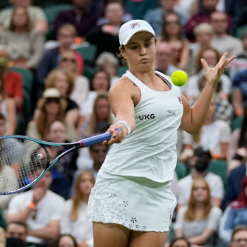
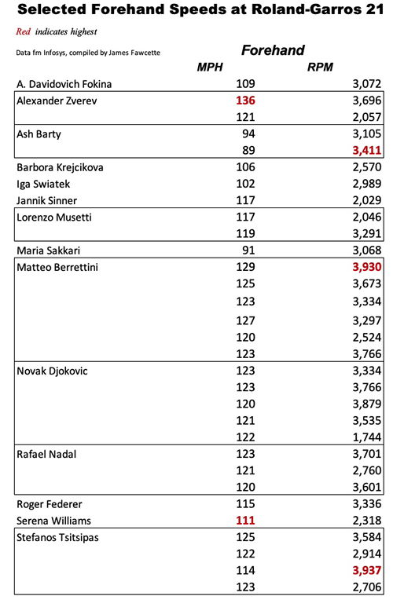
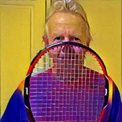

Groundstroke Velocities Soar in Pro Tennis
Why pro groundstrokes are now hitting speeds that were once the exclusive domain of serves.
Groundstroke Velocities Soarin Pro Tennis
James E. Fawcette
Madison Keys: higher average forehand speeds than the men.
Have ATP and WTA tennis pros dramatically increased the peak velocity of their ground strokes in just the last few years? Comparing stats from two majors held four years apart the answer is an emphatic yes.
This article examines how the speed of top pros' groundstrokes has increased, following a pair of articles focused on topspin in groundstrokes. (Click Here for pro spin levels. Click Here for an article on measuring speed and spin in your own game.)
In 2017, Tennis Australia's statistics arm disclosed top forehand stats for that year's Australian Open after tracking velocity of every shot on its main courts. The maximum forehand speeds hit by men were: Rafael Nadal at 112 MPH, Novak Djokovic at 110 MPH, Tomas Berdych at 108 MPH.
Madison Keys had the fastest women's forehand at 97 MPH. Her average forehand velocity was actually higher than that of any of the men.
For several years, whenever anyone asked me what the fastest tennis groundstrokes were I gave this short list. Hitting 120 MPH wasn't unheard of, but it was extraordinary, so rare that people would question whether the result was actually a measurement error.

James hit a 125mph forehand in 2011.
These shots are like unicorns. Many people wouldn't believe they exist until they see them themselves. In 2011 James Blake was measured at 125MPH, Gael Monfils at 120MPH, Jock Sock at 120MPH, Juan Martine del Potro also at 120MPH, and Fernando Gonzalez at 117 mph.
Interesting I also found some data from the wood racket era: forehands from Richard Gonzales and Panco Segura, both at 112MPH.
But thanks to Hawk-Eye at Roland Garros this June, there is a treasure trove of new data showing major changes. At least five men hit multiple forehands in the 120 MPH range, 10-26 MPH faster than Novak's best at the 2017 AO.
One forehand was recorded at a startling 136 MPH. Backhands also reached new levels. And women's speeds have also shown an increase, although the changes there are more in the levels of spin than sheer velocity.
Like me, you may be jumping to the conclusion that this leap in velocity comes from new players that are built more like NBA small forwards than what we expect of tennis pros, more Michael Jordan than Lleyton Hewitt. But even old timers such as Novak Djokovic and Rafael Nadal are joining in the surge, with numerous balls in the 120 MPH range --including some off the backhand side.
Interestingly the average velocities on groundstrokes have not changed noticeably, but 120 MPH groundstrokes, once an aberration, occurred in every men's match from the quarterfinals on at the French.
I collected this data through hours of looking at speeds of individual shots at Roland Garros, one tedious data point at a time. Because of the way I filtered out shots the number of groundstrokes at these velocities is likely larger and the number of players that achieved 120 MPH could also be larger.
Zverev hit two backhands in the French at 130mph plus.
I'll explain how I gathered the information at the end for those that are interested in those details or want to check for themselves. I'll also share my thoughts there on the accuracy of this data and some errors I found.
Zverev and Berrettini
Both the fastest forehand and the two fastest backhands at Roland Garros this year were struck by the 6' 6" Alexander Zverev in his semifinal loss to Stefanos Tsitsipas -- a 136 MPH forehand in the second set and then in their third set a 132 MPH and a 130 MPH backhand.
But if Zverev lit up the speedometer, Matteo Berrettini might own the biggest shot in tennis, if one defines big as a combination of velocity and spin.
Berrettini's biggest forehand came in the final set of his quarterfinal match with Djokovic -- registering 129 MPH at 3,930 RPMs. The only shot I found with higher spin, was a slower Tsitsipas forehand at 114 MPH that notched 3,937 RPMs, a spin difference that could be less than the margin of error.
Berrettini: 120mph forehands with 3200RPM—the heaviest shot in tennis?
The 6 ft 5 in Italian also had at least five other shots of greater than 120 MPHs, four with spin above 3,200 RPMs.
Now we understand why Novak ended that match by screaming fiercely at his box after the Berrettini match, kicking in signage and smashing his racket. It's no fun being on the other end of that artillery for hours.
Again, veterans Djokovic and Nadal had their share, with six and four shots of over 120 MPH each. The surprise, to some, might be that both had backhands of over 120 MPH. Generally, one-handed backhands have both the highest average velocity and spin at the majors.
But Rafa at 124 MPH, and Novak at 122 MPH follow Zverev's two backhands in the 130s as the fastest backhands I found from Roland Garros' data.
Tsitsipas was close behind with a 124 MPH backhand, with Roger Federer at 112 MPH. I remember several years back when TV analyst and tennis coach Darren Cahill said that a Federer backhand at an Australian Open that was in the mid 90s might be "the fastest backhand Fed ever hit." Not anymore. At nearly 40, Fed is hitting about 15 MPH faster.
Musetti hit one backhand at 3511RPM—the highest backhand in the study.
The other Italian teen, quarterfinalist Lorenzo Musetti, hits a heavy one-handed backhand, with one registering 3,511 RPMs at 83 MPH -- by far the highest spin I found for any backhand.
The Women
Turning to the women, Serena Williams reached 111 MPH on a forehand but 17 year old Coco Gauff topped that with a 116 MPH backhand, while the new women's champ Barbora Krejcikova had a 111 MPH backhand.
But unlike the men, the changes I see in the women's stats are more on the spin side than sheer velocity. A trio of top women: Defending champ,Iga Swiatek, Maria Sakkari, and world number one Ash Barty all hit forehands that registered around 3,000 RPMs. This was topped by Ash's 3,411 RPMs on a swinging volley.

Ash Barty's forehands were spinning at 3000 RPM.
When Rafa hits a 3,411 RPM spinner it's credited to his muscles. Yet Ash is all of 5 ft 5 in and Maria is 5 ft 8 in. So talent and technique obviously have much to do with it.
In past Tennisplayer articles we've seen that both the velocity and spin with which top pros hit their groundstrokes has increased substantially in the last few years -- but not in identical fashion. As John Yandell noted, the highest spin rates aren't much different than those his pioneering work with slow motion video found with Sergei Bruguera, a Roland-Garros champ from the 1990s. But far more players are reaching those levels now.
The highest, forehand velocities achieved by the ATP players are reaching levels I don't believe anyone anticipated only a few years ago. More top ATP players are participating in the trend, but not often enough yet to increase average forehand or backhand speeds yet; both remain in the 70 MPHs.
Why is this happening? We can't attribute this solely to a new generation of players with greater strength or improved technique -- not when the Big 3 are participating in the surge. Is it better equipment? If so, what changes occurred in merely the last few years; aerospace materials and co-poly strings have been here for a while now.
Is technique changing to maximize the new equipment? One hypothesis is that as spin levels have gone up players have developed the ability to control higher and higher velocities.

But the easiest way to increase the speed of everyone's shots is by changing the ball. The French Federeration changed to a Wilson ball for Roland Garros a year ago. While we don't know the specifications for the Wilson ball (tournaments often use a brand name, but don't use off-the-shelf balls, instead requiring they be built to spec), they are generally slightly smaller and lighter than the Babolat and Dunlop balls used in Paris for many years.
Back when Penn sponsored the ATP tour, the New York Times examined how at joint events the WTA players used a lighter Penn ball, while the men's extra-duty Penn ATP Tour ball had thicker felt and was heavier. According to the NYT, the lighter ball went 10% faster than the Tour ball. If you multiply Rafa's best at the AO 2017 of 112 MPH by 110% you get 124 MPH, which is his best at this year's Roland-Garros.
Note on Methodology and Accuracy
All the data from Roland-Garros 2021 used here comes from the Infosys Match Center, which can be accessed on that event's website at the home page's top menu under Tournament /Results. There is no publicly-accessible database of information I'm aware of, only the tables of match statistics. The specific numbers we used were obtained by manually searching the graphical presentations, literally one shot at a time, hundreds of times.
Only winning shots were included, because stats of other groundstrokes are not shown, meaning there are likely more shots at high speeds and spins, perhaps some that even higher than any of the winners.
I excluded from my survey any shot whose stats were incomplete. My logic was that if the camera coverage was insufficient to calculate spin (the most often missing data point) then it might be more likely to be inaccurate. Secondly, I excluded any shot where the type of shot shown seemed dubious. The categorization of shots seems to have been done automatically, and while the system generally worked well, there were errors. For example, there were some items with high velocity listed as drop shots.
Maybe the system interprets a short angle at the net as a drop shot when it is was instead being bounced, hard out of bounds by a forehand or overhead. Again, an incorrect category does not mean the other numbers are incorrect, but I decided in an abundance of caution to exclude anything I saw as dubious.

James E. Fawcette is a retired, serial entrepreneur in technology publishing and a long-time tennis fan. His opinions and unforced errors in this article are his own. Data is from Roland-Garros, Fédération française de tennis, via the Infosys Match Center.
Source: tennisplayer.net archive — Groundstroke Velocities Soar in Pro Tennis.docx (John Yandell teaching library, 2002-2022). Extracted and rendered as HTML for Tennis Future Lab.